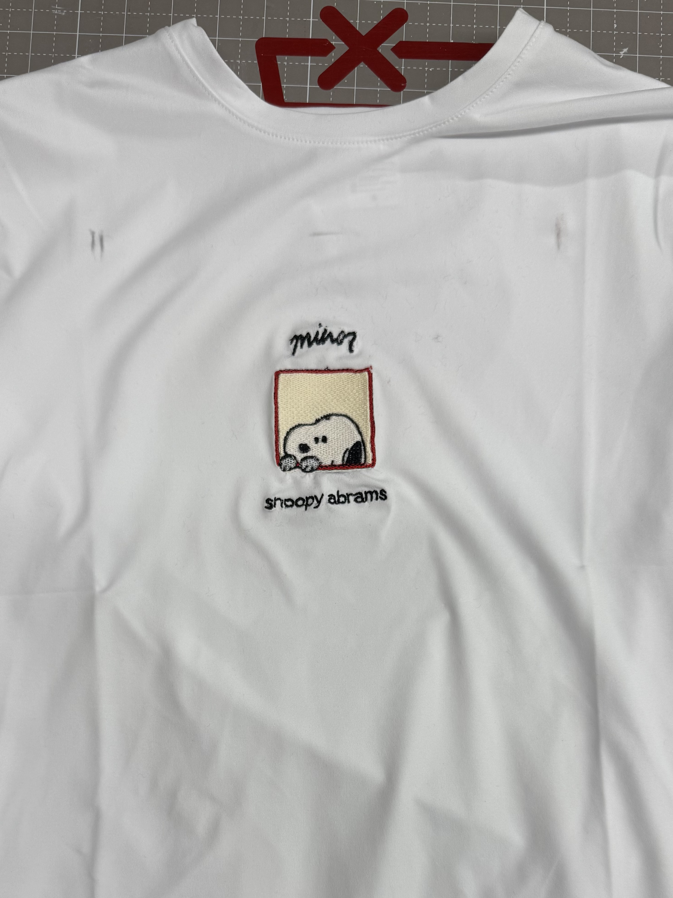
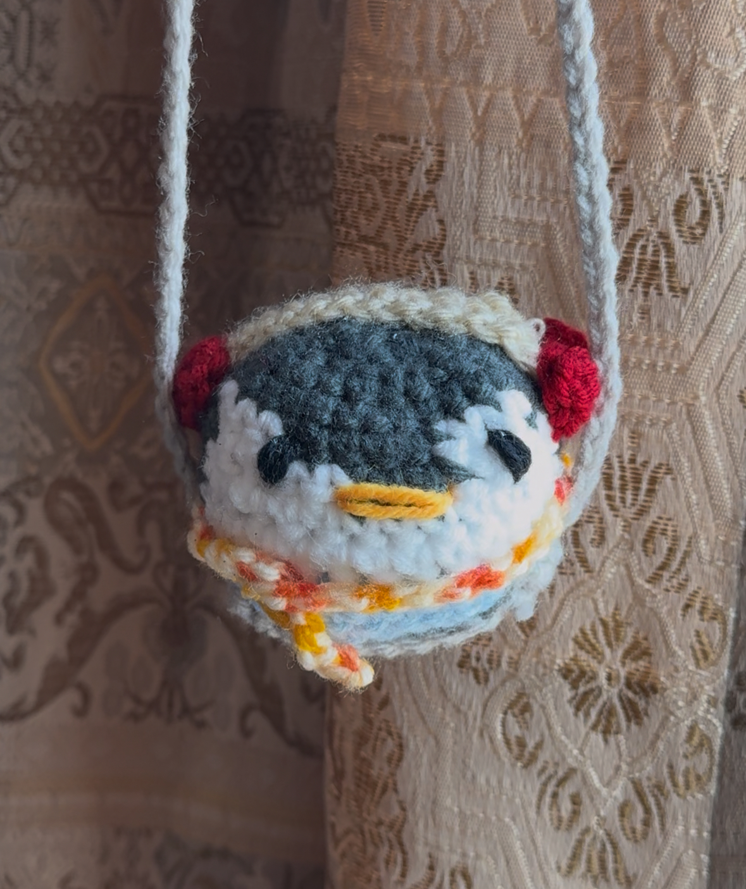

Crafts & Art
A collection of my craft projects (est. February 2025)
After signing up for a sewing training at the MIT Metropolis
Makerspace, I discovered how much I loved crafting.
Within the span of a semester, I learned to sew, crochet, glass
flamework, create stained glass, embroider, and so much more.
Now, inducted as a makerspace mentor, I continue to spend hours
crafting every week and passing on my knowledge to others,
continuing the sprit of making at MIT.
Most Recent to Least Recent:





Current Favorite Playlists
A selection of my favorite Spotify playlists